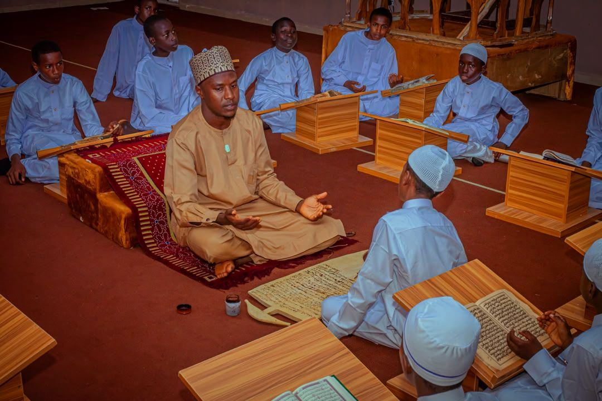
01
Qur’anic Memorisation
The allo and the Sheikh’s method: the whole Qur’an in about four years, with no begging since 2006.
For more than sixty years, Maulana Sheikh Dahiru Usman Bauchi taught the Book of Allah. Today his Foundation runs 764 Qur’anic schools in five countries, and is building an Islamic Centre in every state of the North.
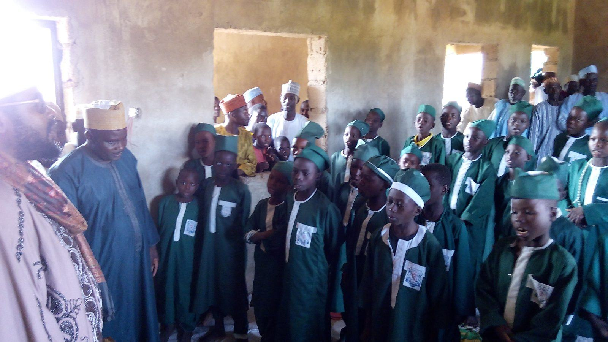
For more than sixty years, Maulana Sheikh Dahiru Usman Bauchi taught the Qur’an and gave moral instruction to Muslim communities in Nigeria and around the world.
He returned to his Lord in November 2025. His work did not end with him. It lives on in the Foundation that carries his name, in hundreds of schools, and in every child who opens a slate to learn the Qur’an.
From the 2024/2025 survey of the Directorate of Education. Tap any state to see its schools, or switch to the Vision 2036 rollout.
Search the Foundation’s schools by state, local government or community, as recorded in the 2024/2025 survey.
The Directorate of Education runs five categories of learning, from the first verse a child memorises to a trade in their hands.

The allo and the Sheikh’s method: the whole Qur’an in about four years, with no begging since 2006.
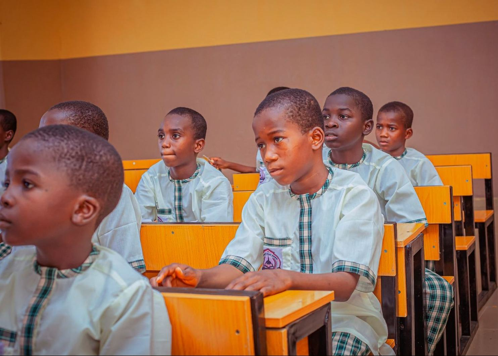
A strong start in reading, numbers and character, beside the Qur’an.
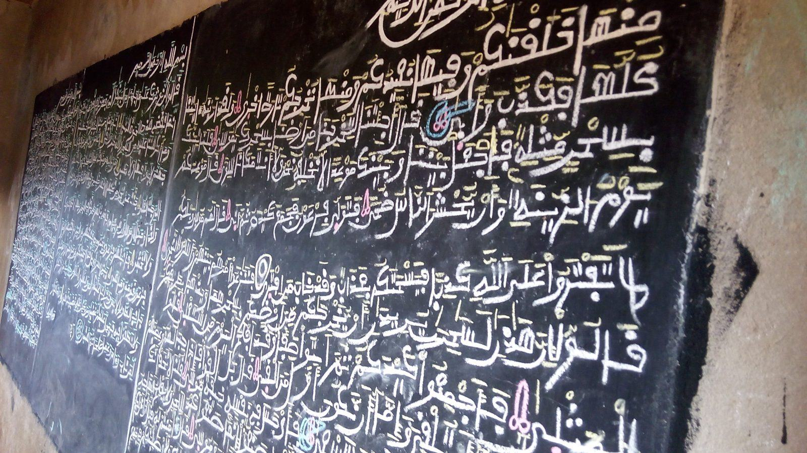
The sciences of the Qur’an, fiqh, hadith and Arabic, after memorisation.
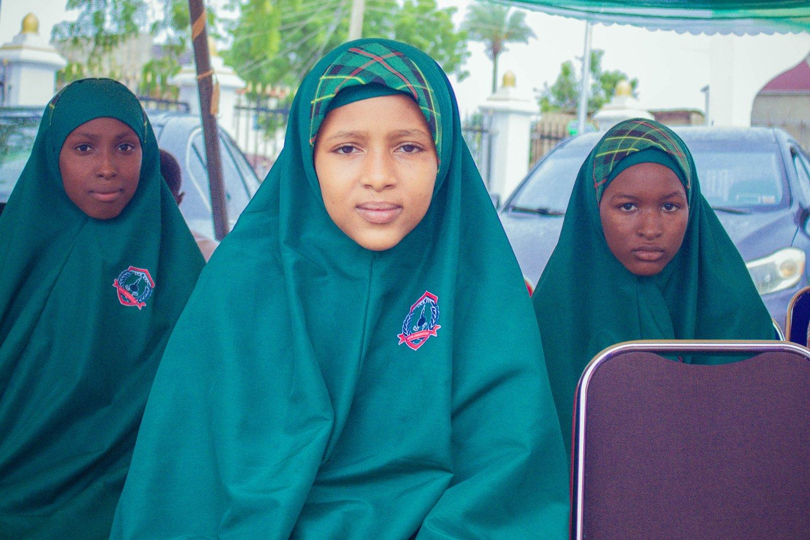
Since 2024 at the Sheikh Tahir Science and Arts Academy, memorisers continue into full Western education.
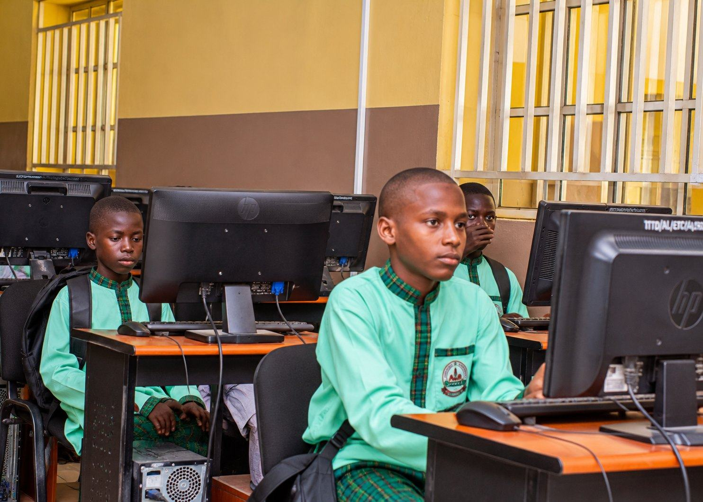
Sheikh Tahir Tsangaya Model School, Kangere: one child, one path, from the Qur’an to a trade.
Our ten-year direction. It takes the system we already run and connects it into one path, from the first verse of the Qur’an to the doors of a university, and carries it into every state of the North.
Mosque and Zawiya, the Qur’anic learning centre, Islamic knowledge and a Kangere-type school, in one complex.
Academic preparation, scholarships, admissions, research and returning scholars.
The higher-education horizon of the whole system, functioning by 2036.
Training and certifying the teachers who carry the Foundation’s method.
Scholarship, study, return and service: scholars who come home to teach and lead.
Food, practical skills and self-reliance for every school community.
An Islamic Centre is far more than a mosque. Every northern state will receive the same complete Sheikh Tahir Islamic Centre, built to one standard and run the same way. Tap each part of the Centre.
A site is secured. Land given by government, a local government or the community.
A founding partner commits to build the state’s Islamic Centre.
The previous target is running its Islamic Centre, open and serving.
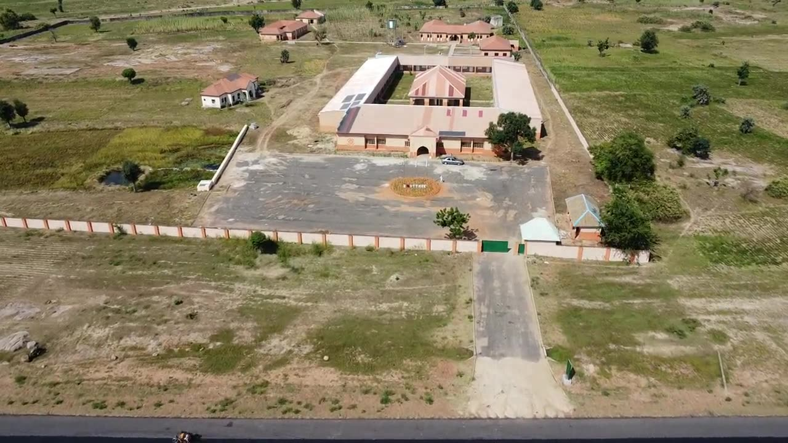
The model every Islamic Centre will carry at its heart: children memorise the Qur’an and complete primary and junior secondary school at the same time, then learn a trade.
Brought back to life in partnership with the Al-Muhibbah Foundation of Her Excellency, Hajiya (Dr.) Aisha Bala Mohammed. Commissioned on 29 October 2026.
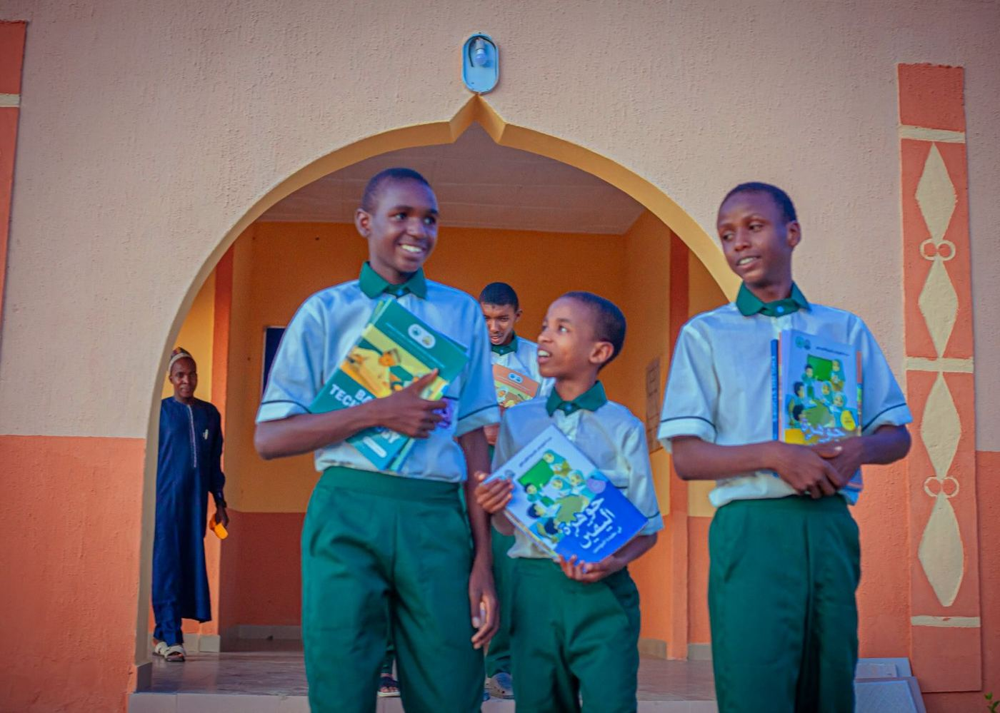
The integrated Tsangaya model: Qur’an, primary, secondary and skills under one roof.
sttmskangere.com.ng ›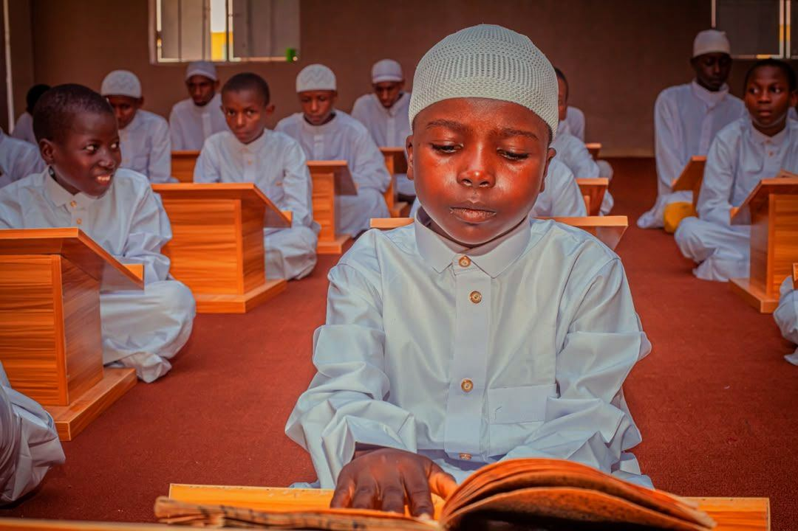
The Foundation’s own books and lesson plans that carry the Sheikh’s method into every classroom.
The Qur’an with Sidi’s tilawa, Hadayan Shehu, the awrad of the Tariqa, prayer times with the adhan, the Qibla and the community.
Learn the Qur’an step by step, for children and adults, with daily lessons, the allo and Sidi’s voice.
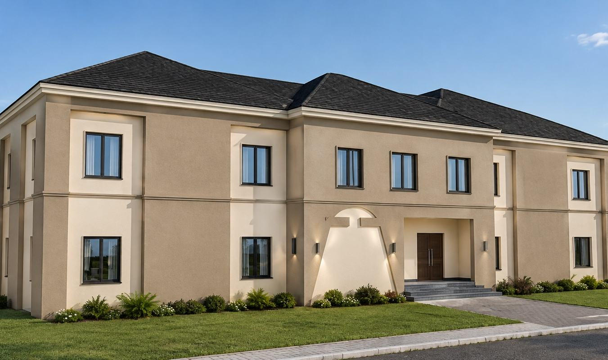
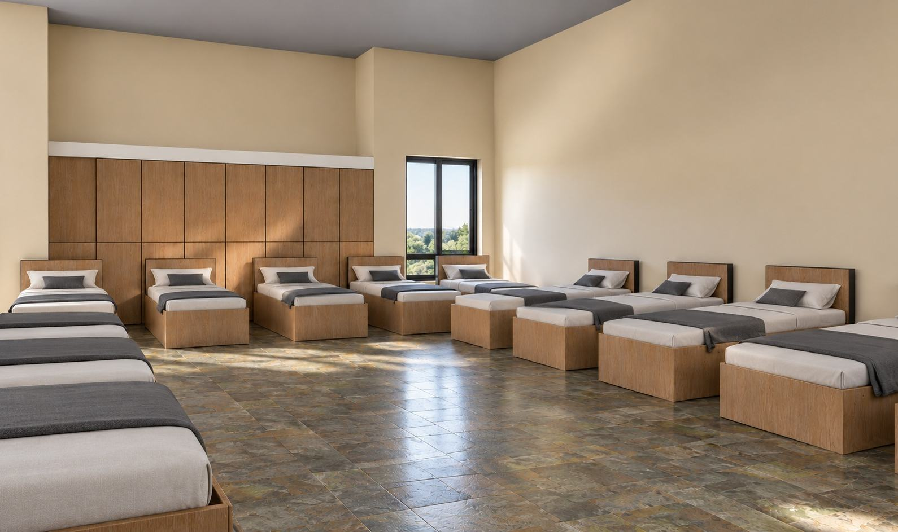
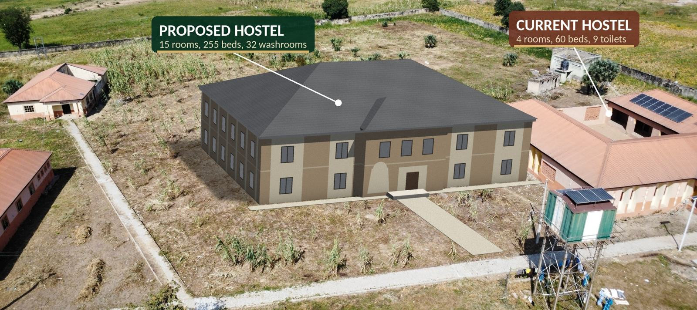
STTMSK has outgrown its hostel. The architecture, plans and quantity survey of a new, larger hostel are ready. Every block you give keeps earning reward for as long as a child sleeps safely under that roof.
“The example of those who spend their wealth in the way of Allah is like a seed of grain that grows seven ears.” Surah al-Baqarah, 2:261
Our schools run without routine public funding. Communities, teachers and scholars have carried them for years. Vision 2036 asks the world to stand beside them.
Governments, local governments and communities provide land for an Islamic Centre or a school.
Build a Sheikh Tahir Islamic Centre, or one of its parts: the mosque and zawiya, the Qur’anic learning centre, or the hall of Islamic knowledge.
Give a Centre its Kangere-type school: Qur’an, Islamic and Western education, and skills.
Qur’anic halls, classrooms, ICT laboratories, libraries and boarding.
Welfare, feeding and support for the teachers who carry the method.
Apprenticeships, vocational training and farming support for our students.
Become the founding partner of the Sheikh Tahir Islamic Centre in one northern state, and be named on it for generations.
For partnerships, land for an Islamic Centre, sponsorship, visits or questions about Vision 2036, the head office will answer you.